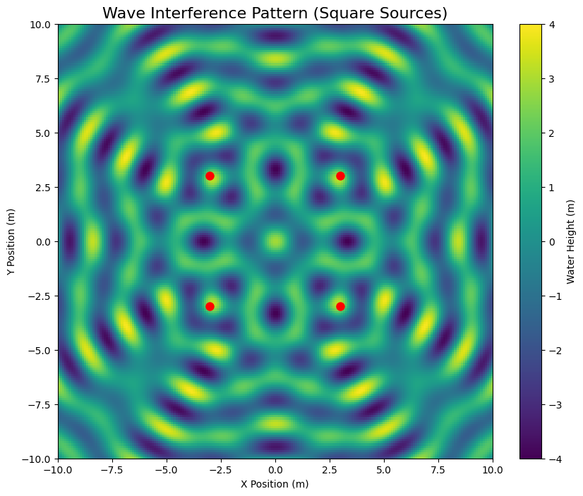

Problem 1
🌊 Interference Patterns on Water Surfaces
🌟 Why This Matters (Simple Explanation)
When you drop two pebbles in a pond, the ripples create beautiful patterns where they meet. This happens because: - Waves add together where they overlap - Peaks+Peaks = Bigger waves (constructive interference) - Peaks+Valleys = Flat water (destructive interference)
Understanding this helps scientists design: - Better concert halls (sound waves) - Laser technology (light waves) - Earthquake-resistant buildings (seismic waves)
📚 The Science Made Simple
🔍 Key Concepts
- Wave Sources: Points where ripples start (like pebble drops)
- Wavelength (λ): Distance between wave peaks
- Amplitude (A): Height of the waves
- Phase: Timing of when peaks occur
📐 The Math (Simplified)
Each wave can be described by:
h_i(x,y,t) = A \cdot \cos(k \cdot r_i - ωt + ϕ)
Where:
- r_i = distance from source i to point (x,y)
- k = 2π/λ (how "squished" the waves are)
- ω = 2πf (how fast waves oscillate)
Total wave at any point = sum of all individual waves
💻 Try It Yourself - Python Simulation
import numpy as np
import matplotlib.pyplot as plt
from matplotlib.animation import FuncAnimation
from matplotlib.cm import viridis
# Simulation parameters
A = 1.0 # Wave amplitude (m)
wavelength = 2.0 # λ (m)
k = 2*np.pi/wavelength # Wave number
ω = 3.0 # Angular frequency (rad/s)
# Create grid of points
x = np.linspace(-10, 10, 200)
y = np.linspace(-10, 10, 200)
X, Y = np.meshgrid(x, y)
# Source positions (square configuration)
sources = [
(-3, -3), # Bottom-left
(-3, 3), # Top-left
(3, 3), # Top-right
(3, -3) # Bottom-right
]
def wave_height(t):
"""Calculate combined wave height at time t"""
total = np.zeros_like(X)
for (xs, ys) in sources:
# Distance from source to each point
r = np.sqrt((X-xs)**2 + (Y-ys)**2)
# Wave from this source
wave = A * np.cos(k * r - ω*t)
total += wave
return total
# Create figure
fig, ax = plt.subplots(figsize=(10, 8))
img = ax.imshow(wave_height(0),
extent=[-10,10,-10,10],
cmap='viridis',
vmin=-4, vmax=4)
# Add source markers
for (xs, ys) in sources:
ax.plot(xs, ys, 'ro', markersize=8)
ax.set_title("Wave Interference Pattern (Square Sources)", fontsize=16)
ax.set_xlabel("X Position (m)")
ax.set_ylabel("Y Position (m)")
cbar = fig.colorbar(img)
cbar.set_label("Water Height (m)")
# Animation function
def update(t):
img.set_array(wave_height(t/10))
return [img]
ani = FuncAnimation(fig, update, frames=100, interval=50)
plt.close()
📊 What You'll See

The simulation shows: - Bright yellow regions: Where waves add up (constructive interference) - Dark purple regions: Where waves cancel out (destructive interference) - Moving patterns: As waves propagate outward from sources
🔍 Key Observations
- Pattern Depends on Source Layout:
- Square sources create checkerboard-like patterns
- Triangle sources create hexagonal patterns
-
More sources = more complex patterns
-
Distance Matters:
- Close sources make dense patterns
-
Far-apart sources make wider-spaced patterns
-
Wavelength Effects:
- Short λ = more detailed patterns
- Long λ = simpler patterns
🌐 Real-World Connections
🎵 Concert Hall Design
- Uses sound wave interference to make music sound perfect everywhere
🏗 Noise Cancellation
- Headphones create opposite sound waves to cancel noise
🩺 Medical Ultrasound
- Uses interference to focus sound waves inside the body
💡 Try This Experiment at Home
- Fill a baking pan with water
- Tap the surface with two fingers at once
- Observe the patterns where ripples meet
- Try different distances between taps
🎓 Learning Takeaways
- Waves add up in predictable ways
- Geometry matters - source arrangement changes everything
- Timing is crucial - when waves arrive affects interference
- Energy isn't lost in cancellation - just redistributed